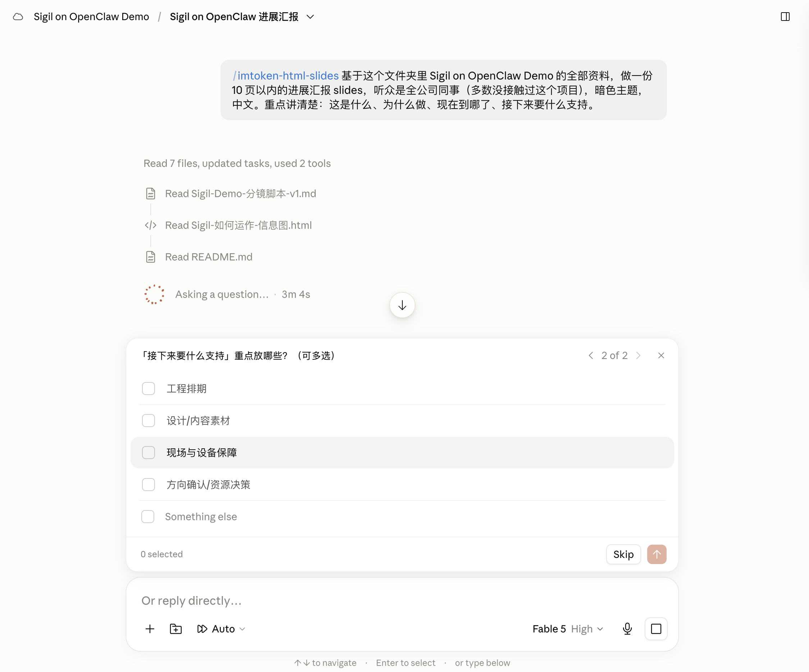

会前十分钟，
用 Skill 准备一次亮眼的演讲。
一套让 AI 从项目第一天就在场的方法 —— 以及为什么最亮的那部分，AI 给不了你。
2026.08.07 FRI 17:00
「会前恐慌」
周五 16:50，17:00 要汇报。接下来的八分钟，你做的每一件事都不是在准备演讲。
你伸手抓的救命稻草
打开 AI，粘贴三段零碎信息：「帮我做一份项目进展汇报 PPT。」十页，结构完整，配色专业 —— 然后你不敢投屏。
它没见过你的 Figma、你的文档
它只能拿通用行业常识来填空
最后十分钟只是收获。
今天所有内容，都是为了让这句话变得可执行。
今天给你们三样东西
不是三个技巧，是一个习惯、一个工具、一个你今晚带走的真相。
一个习惯
让 AI 全程在场，从项目第一天开始持续积累上下文。
不是会前才想起它。
一个工具
一个跨平台的 Slides Skill。
今天现场装、现场用，散会就能带走。
一个真相
AI 拉平了制作，放大了表达。
最亮的那部分，它给不了你。
先把任务发出去
生成一份 deck 要 5–10 分钟。所以现在就发出去，我们先去讲方法论，十分钟后回来取结果。
项目文件夹已连接
资料早就在那儿了 —— 我不是现在才开始收集。
Prompt 只交代三件事
听众是谁、要多长、要回答哪四个问题。没有特殊话术。
发出后不用守着
异步任务的用法就是这样：发出去，转身做别的事。
AI 在场方法论
三个习惯，把「最后十分钟」变成一件轻松的事。
我给它起了个名字：Context Farming —— 一路种上下文，最后一次收成。
比没有 AI 更糟的，是没有上下文的 AI
最后十分钟才想起 AI
它不知道你的项目、不知道你的同事叫什么、不知道上周决定了什么。
于是它给你一份看起来很完整、内容全是编的 deck。
你上台前才发现 —— 或者更糟，上台后才被指出来。
从第一天就在场的 AI
它读过你的决策记录、认识你的同事、知道上周为什么改了方案。
你说一句话，它给你一份数字要么能追到源文件、要么被明确标成待补的 deck。
上台前你唯一要做的，是把它读一遍。
「Never silently invent filler content for a gap — a deck that looks complete but contains fabricated facts is a failed deck.」
给项目一个大脑
项目开工第一天，写一个文件。不是写给 AI 的技术文档 —— 是写给三个月后的自己。
新开一个对话，不用再自我介绍一遍。
问「上次为什么这么定」，它能直接答，而不是猜。
写纪要、写 slide 时，人名和术语都是对的。
输出风格不用每次重新交代。
一个 31 KB 的纯文本文件
它大概是我这台电脑上被读得最勤的一个文件 —— 因为读它的不只是人。
CLAUDE.md 不会自动同步。它的上半部分还停在 4 月，常用记忆那部分却更新到了 6 月 —— 它需要定期更新。但即便只更新了一半，它依然是最快的上下文入口。
会议转写把我们的合作伙伴，听成了一个形容词
语音转写会犯错，而且每次都犯同样的错。
所以我把纠正写进了术语表 —— 写一次，一劳永逸。
| 术语 | 转写听成了 | 它其实是 |
|---|---|---|
| Solver | 索罗 / SOVER | 第三方跨链路由执行服务商 |
| Tokenlon | 托克龙 | imToken 旗下去中心化交易协议 |
| VETA | Better | Agent Trading 第三方合作伙伴 |
| Nostr | publicnotread / north tron | 去中心化通信协议 |
只要 AI 读到了这张术语表，「索罗」就会被还原成 Solver、「Better」还原成 VETA。写一次，往后每一份纪要都少犯一次同样的错。
每个节点，让 AI 参与思考、留下产出
上下文不是最后一刻收集的，是一路沉淀下来的。
会议纪要 → 决策记录
开完会顺手生成，并把听错的术语一起修正掉。
阶段总结 → 下阶段计划
每个节点收口时问一次：这一段发生了什么，下一段做什么。
全部沉淀为文件
不进收藏夹、不进聊天记录，就放在项目文件夹里。
五个月，我几乎没有一次是从空白页开始的
平均每 5.1 天 就要站到人前讲一次。你不可能每次都熬夜做 PPT。
平均每 17 小时 就有一份新文件落地 —— 这里面几乎没有一份是从空白页开始的。
39 条 git 分支，其中 36 条叫 update/xxx —— kickoff-slides 改到 v3，design-proposal 改到 v3，project-summary 改到 v4。每一次「再改一版」都留下了痕迹。
做过三次之后，把品味封装成 Skill
前两个习惯解决「内容对不对」。第三个解决「好不好看、要不要每次重新调」。
零 bullet point，一页一个想法
数字必须有语境
缺内容就标注，禁止编造
「Every deck produced with it should feel like a sibling of those files: 精美、可读性强、克制而精致的动效、大屏友好。」
三个习惯，一条链
静态上下文：我是谁、项目是什么、谁在做
动态上下文：决定了什么、为什么、下一步
表达标准：长什么样、怎么排、什么不能编
回来取结果
同一个 Skill，两个完全不同的入口 —— 一个在 Cowork，一个在终端。
它自己列了计划，然后自己勾完了

点击放大它自己拆了任务、自己勾了进度
计划不是我写的，是它读完素材之后列的。
人名、日期、决策都是对的
因为它读了 Sigil on OpenClaw Demo 这个项目文件夹，不是靠猜。
我全程没有回答过一个问题
任务发出后我就上台讲 Part 1 了 —— 这十分钟它一直在跑。
换一个入口，同一个 Skill
重点不是终端多酷。重点是：同一个 Skill 文件夹，在 Cowork 里能用，在终端里能用 —— 接下来，在你们的 ChatGPT 里也能用。
Skill 本质上只是一个文件夹
一份 Markdown 说明书 + 几个 HTML 模板。任何能读文件的 AI 都能用它 —— 差别只在于是「自动触发」还是「手动指路」。
Claude 系（Cowork / Claude Code）
提一句「做个 slides」，它自己去翻说明书，你不用管它在哪。
其他工具（ChatGPT / Gemini / Kimi / Cursor…）
在规则文件里加一行指路，或者干脆把说明书粘进对话 —— 效果一样。
三层方案，覆盖所有人
现在轮到你
十五分钟，在你自己常用的工具里，跑通一次 Skill 生成。
你用什么工具？
| 工具 | 你要做的事 | 时间 |
|---|---|---|
| ChatGPT · 多数人 | 点共享 GPT 链接，直接开聊；或粘贴 PROMPT-PACK + 上传 lite 模板 | ~1 min |
| Claude Cowork | 设置 → Skills → 上传 .skill 文件 | ~2 min |
| Claude Code · 终端 | 拷贝文件夹到 ~/.claude/skills/ | ~1 min |
| Gemini / Kimi (K3) | 粘贴 PROMPT-PACK（可存为 Gem / 常用指令） | ~1 min |
| Cursor / Codex | kit 拖进项目 + AGENTS.md 加一行 | ~2 min |
没有项目素材？
用资源包里的「样例素材包」—— 一份脱敏的假项目，保证能跑。
生成好了？
把 HTML 发到视频会议聊天窗口，或者直接 Slack 发我。我边收边看。
不知道从哪开始？用这句
说清听众
决定讲多深、用不用术语。
说清长度
决定每页塞多少信息。
先问再做
这一句能挡掉绝大部分编造。
前三分钟解决安装，后十二分钟动手做。
没素材的人用资源包里的「样例素材包」；实在跑不起来的人，先看旁边同事的屏幕 —— 待会点评一样能听懂。
内容都对了，
为什么还是不亮？
现在我们看几份刚出炉的作品 —— 我一句都挑不出毛病，但我要问一个更尖锐的问题。
如果你明天拿它上台，会发生什么？
三份现场作品。我们一份一份看。


AI 做的 slides，几乎都会犯这五个错
不是 AI 不行，是这五件事本来就不在「做 slides」这个任务里。
每页都想说三件事
于是没有一句被记住。
缺 Headline数字没有参照
「完成了 12 个组件」—— 所以呢？多还是少？
数字没有语境全是「我们做了什么」
没有一句是「这跟听的人有什么关系」。
没回答「与我何干」顺序是时间顺序
不是故事顺序，没有张力。
没有反派打算照着念
slides 成了提词器。
没排练剩下的 10%，
恰好是让演讲发光的 100%。
那 10% 是什么？有个人研究了乔布斯一辈子的发布会，写成了一本书。
乔布斯的魔力演讲
The Presentation Secrets of Steve Jobs · Carmine Gallo · 2009 —— 一本 2009 年的书，在 AI 时代反而更锋利了。
他把乔布斯的发布会，拆成了一部电影剧本
三幕、18 个场景 —— 编剧、表演、排练。今天我只讲其中六招。
创作故事
呈现体验
精炼与排练
推特式标题
用一句少于 140 字符、具体、含听众利益的话定义你要讲的东西，然后整场反复说它。
发布 iPod 时他没说「5GB 硬盘」，他说 ——
发布 iPhone 时的第一句话是 ——
三的法则
人一次只记得住三件事。开场就把路线图给出来，然后逐一展开。
iPhone 发布会上，他把这三样东西反复念了好几遍 ——
反派与英雄
先立一个敌人，让听众恨它；再让你的方案作为英雄登场。没有反派的演讲没有张力。
1984 年广告里的反派是 IBM「老大哥」。
2007 年 iPhone 的反派是难用的现有智能手机 —— 他用了好几分钟细数它们的问题，然后才掏出 iPhone。
10 分钟法则 + 一页一个想法
注意力大约每 10 分钟断崖式下滑一次 —— 每 10 分钟必须换一种刺激形态。而每一页 slide 只讲一件事，零 bullet point。
他的发布会上每 10 分钟必有一次 Demo、一段视频，或一位嘉宾上台。他的 slide 常常只有一个词或一张图。
给数字一个参照
孤零零的数字没有意义。必须换算成听众有概念的尺度。
不说总销量，说 平均每天卖出 2 万台。
不说「30GB」，说 7,500 首歌、25,000 张照片。
| 「39 条 git 分支」 | |
| 「同一份材料，平均改到第 3 版才敢发出去」 |
毫不费力的背后
「看起来毫不费力」是排练出来的，不是天赋。
Q&A 提前归类：预判问题 → 归成最多 7 类 → 每类备一个最佳答案 → 现场听到关键词就调取。
放大了表达。
当每个人都能用 AI 做出漂亮的 slides，「做得好看」不再是差异。
把 AI 省下来的时间，全部还给排练 —— 乔布斯为一场 1 小时的发布会演讲，准备 90 小时。
最后告诉你们一件事
是我睡前发出去的一个 prompt 做的。
我希望你建立一个 workflow，用多个 agents 去做，从探索，到收敛，再到执行，audit，再 refine，直到产出高质量的 Slides。
我要去睡觉了，六个小时后见，我需要你一路执行到底。
我给你十分钟，看有什么问题需要问我。」
早上拿到的，是一份七八分的 slides
剩下那两分，是我今天一整天补的 —— 但我补的不是字，是判断。
回工位就能用的东西

让 AI 从项目第一天就在场，
最后十分钟只是收获。
而最亮的那部分 —— 标题、反派、排练、你站在台上的样子 —— 永远是你自己的。